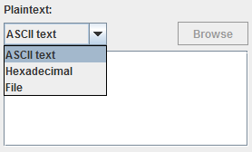
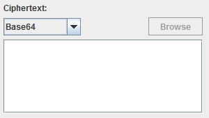
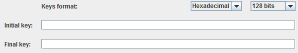

Here there are two main operation modes: Server and Client
The process of simulating attacks is divided in three simple steps.
 Operation.
Operation.
Here there are two main operation modes: Server and Client
By choosing the server mode we can see that every option and field of the window are enabled, because they are necessary for its execution. In this part of thw window we have to enter the number of clients that are going to connect to our server, with which it will communicate to perform the attack, and the encryption mode. In case that we want to perform the attack in a single computer, the option single user is available, in which no information about the connection is needed to be provided. This option allows as to choose the way in which the plaintext will be managed in the application once it is splitted into blocks. These two method are ECB (Electronic CodeBook) and CBC (Cipher-Block Chaining). By choosing the CBC mode, when we press the "Run" button a window will appear to ask for the initilization vector, which is a 16 bytes vector (32 hexadecimal digits) needed for performing this method.
If we choose the client mode, we have to enter only the IP of the server to which we want to connect to perform the attack. In case that this were wrong or were not found, the program would warn us, not letting us continue.
 Input.
Input.
Once selected the operation mode, if we hace chosen to act as a server, we have to fill in this section. We can see that we have to enter two different thing: the plaintext and the ciphertext.
In the plaintext we must enter the text or file before the encryption, and can be filled in in three different formats, that are configured in the selection box that is found over this text area: ASCII text, Hexadecimal and File.
The ASCII text allows to enter an standard text of up to 1024 characters, the hecadecimal allows to enter up to 2048 hexadecimal digits, and the file enables the "Browse" button. Through this button we access to a window where we are allowed to choose the unencrypted file, with a size of 40MB at maximum, that we want to use.
Apart from this, in the ciphertext we have to enter the text or file after being encrypted with the application. Just as in the plaintext it has three format options: Base64, Hexadecimal and File.
Base64 is a method to encode any quantity if bits that allows to represent them in printable characters, and it is allowed to enter up to 1388 characters in Base64. For the hexadecimal option it is allowes to enter up to 2080 hexadecimal digits, and the file option enables the button "Browse", that is similar to the plaintext one, and will lead us to a window where we can select the file, encrypted this time, that we want tu use. Remember that this file can have a maximum size of 40MBs.
 Key space.
Key space.
Finally, we have to enter the initial and final key that we will use to perform the key search between both values.

Here we have several format options in which to enter those keys. In the box at the right we can select the size of the key, that will be of 128, 192 or 256 bits. It need to be noted that with bigger keys the key test process will take longer. As for the box at the left, ir allows us to choose if we will enter the key in ASCII or Hexadecimal
If we select ASCII, we have to enter 16, 24 or 32 standard characters (for a key size of 128, 192 or 256 bits respectively).
If we select hexadecimal, we have to enter 32, 48 or 64 hexadecimal digits (for a key size of 128, 192 or 256 bits respectively).
From the menu "File" we can exit this window, and from the menu "Edit" we can copy and paste all the fields that we need to.
Pby pressing the button "Run" we will launch the execution of the server or client, depending on our selection. I fthe data have been entered correctlym a window will appear in which the state of the connection and the whole process can be followed. For a more detailed description of the different messages and their meaning, click here
The application will check that all the field are filled in correctly, warning the user in case that he has to fill in any of them or because any entered data is not correct.
by pressing the button "Cancel" we will come back to the main application window.
Related information:
Encryption,Decryption, AddRoundKey, MixColumns, ShiftRows, SubBytes, Description of the messages of the client/server commication process, Base64, ECB, CBC, Padding.